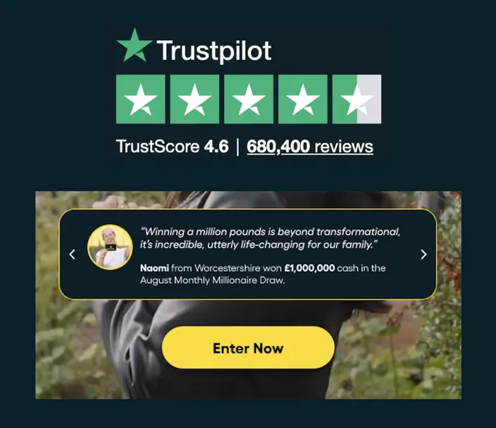
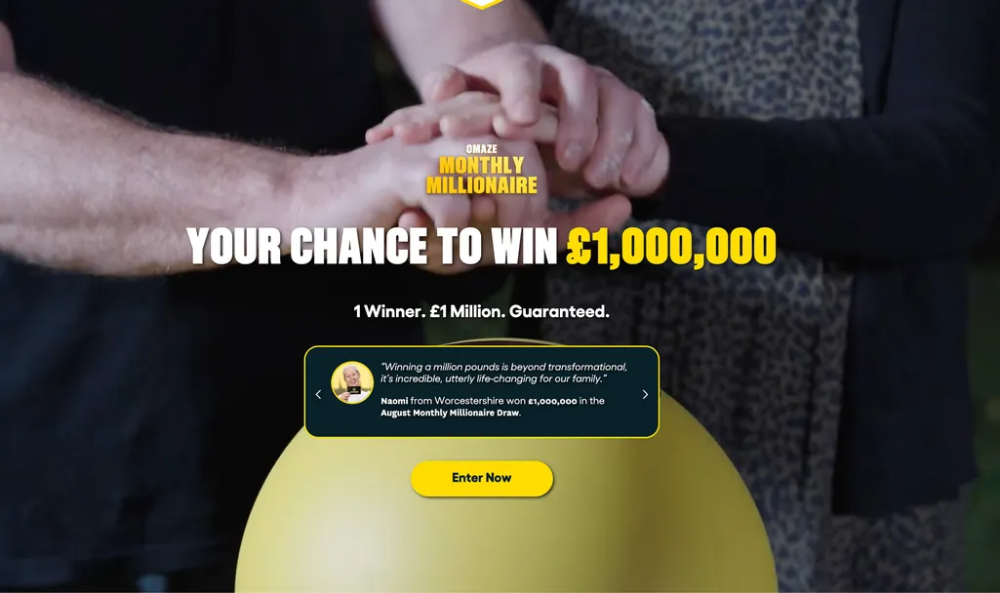
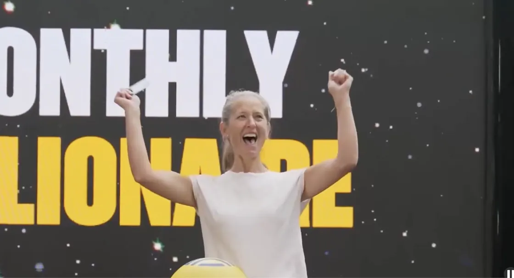
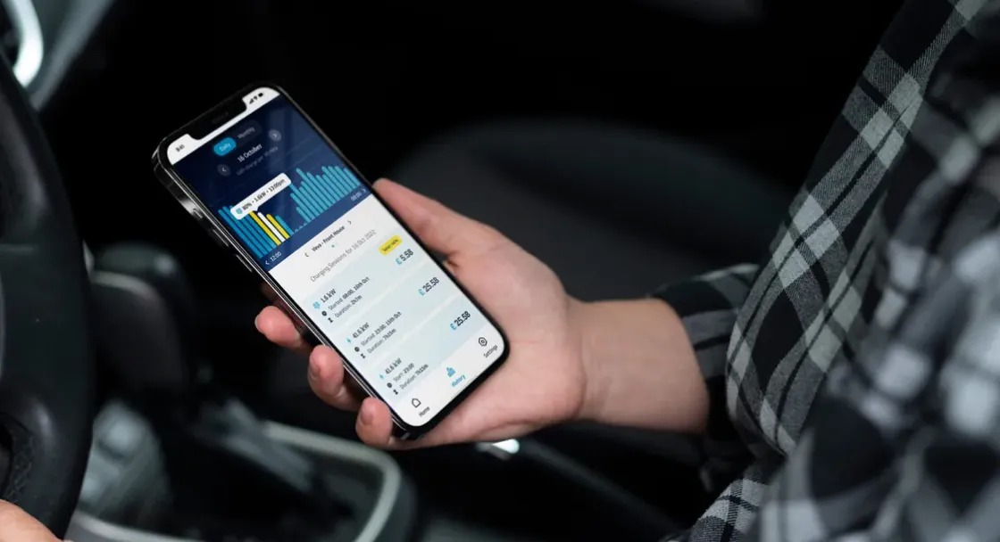
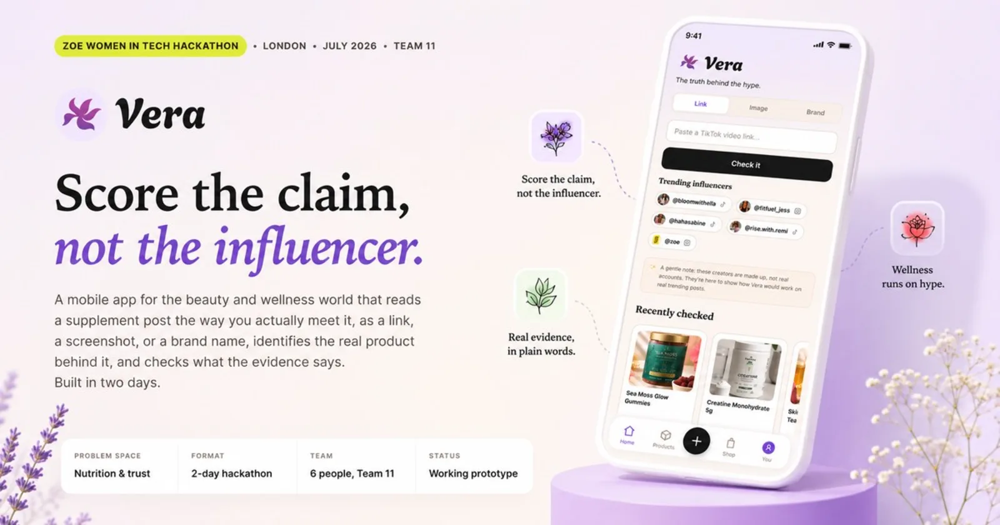

01 The funnel
“A number of new listers never make a sale in their first six months.” Depop, New Seller Experience
At Omaze I led the design of the Monthly Millionaire draw. It launched at roughly £650,000 a month against a forecast above £1,000,000, so the brief was a funnel that was underperforming and nobody agreed on why.
The thing that unblocked it was not a design idea. Funnel data showed mobile users were interacting almost entirely with the bottom half of the screen, and internal data showed a customer base skewing 45 and over. Once those two facts were on the table, the team stopped arguing about layout and started rebuilding around thumb-reachable actions and larger type. Opinion became a measurement problem.
Then three experiments, deliberately one at a time. Third-party trust signals above the fold. Winner reaction footage as a looping hero. Reframing the subscription as the better value, anchored on entries rather than price. That last one carried real cannibalisation risk, so we measured both sides of it rather than only the number we wanted to go up.
- +7.3%Trust signals above the fold
- +4.8%Winner footage as hero
- +8.5%Value reframe, no cannibalisation
- 35%Overall conversion uplift
£1.5m in a single month, sustained above £1m thereafter. Solo designer, working with two engineers, two product managers, growth and CRM.
Separately at Omaze: checkout bolt-ons lifted attachment rate by 27%, and a redesigned cancellation and retention flow reduced subscriber cancellations by 9.5% in three months.


02 Simplicity
“Champion simplicity for new users: one key action at a time, step-by-step flows over long forms.” Depop, New Seller Experience
At Fertifa, a reproductive and employee health benefits provider, I designed onboarding across variable benefit packages: conditional flows that surfaced only the entitlements a person was actually eligible for, dual email verification balancing healthcare compliance against friction, and a dashboard whose content changed based on what someone had told us.
The decision I would bring to this role came from a disagreement. The team wanted a free-text box at the end of onboarding, asking people to describe what they needed.
Someone three screens into a flow has not yet formed the sentence you are asking them to write. I proposed example questions they could recognise rather than compose, plus a direct route to booking, and moved the free text to the booking point, where the person has already decided and now has something specific to say. That argument is the same one your guiding principle makes: simplify, one step at a time, powerful features only once someone is ready.
It applies directly to a first listing. Photos, title, brand, category, size, condition, price and shipping is a long form standing between a new seller and any reward at all, at the exact moment they least believe the effort will pay off.
Fertifa onboarding: the conditional eligibility flow
Fertifa: the dual email verification step
Fertifa: the dashboard after onboarding
03 Motivational design
“Apply motivational and behavioural design: targets, progress, streaks, milestones.” Depop, New Seller Experience
I have built this. On WeGlow, a fitness app and community that is around 90% women, I redesigned My Journey, the part of the product where someone sees their own progress. It was the section the team described as underdeveloped, which is usually a sign that nobody had decided what it was for. Sole designer, with a product manager and two mobile engineers, shipped to iOS and Android.
What I designed
Daily and weekly streaks, modelled on Duolingo's. A medal system covering 115 achievements, each drawn in an active and an inactive state, so 230 designs in total. Progress photos that assemble into a collage over time. Personal bests, workout history, exercise minutes and energy burned. All of it organised into four tabs: Progress, Photos, Activity and Awards. I also extended the palette beyond the orange and grey the app had, so the new sections read as distinct without breaking the existing product.
What I learned from it
Having built streaks, I am more careful about them than I was before. A streak makes a person's consistency visible, which is powerful, and it also manufactures an obligation. The moment it breaks, it can become a reason to leave rather than a reason to come back.
The 115 medals were the counterweight. Spreading achievement across many different things, at many levels of difficulty, meant progress was never one fragile number that a bad week could reset. That is the part I would bring here rather than the streak itself.
That last line is a hypothesis, not a finding. WeGlow has no published metrics, so I would treat what I learned there as instinct to be corrected. The first thing I would want is the data on what new listers actually do in the days after their first listing, and whether the ones who reach a first sale behave differently in that window.
WeGlow: the medal set, active and inactive states
WeGlow: the Awards tab in full
WeGlow: progress photos assembling into a collage
04 Trust signals
“Trust signals that make new sellers more appealing to buyers.” Depop, New Seller Experience
I have measured this. Moving third-party trust signals above the fold at Omaze returned 7.3% on its own, on a product where the purchase was small and the brand was already known. Buying secondhand clothes from a stranger is a considerably harder ask.
The interesting part of your version is the cold start. A new seller has no reviews, no sales history and no follower count, which means the usual trust signals are exactly the ones they cannot produce. So the design question is what someone can earn or display before their first transaction, and whether any of it is credible to a buyer who knows it costs nothing to generate.
It is also a two-sided decision rather than a seller feature. Every signal you give a new seller is a claim you are making to a buyer on their behalf, and if it turns out to be unreliable, the cost lands on the platform rather than on either of them. That is the kind of trade I would want to make deliberately, with Trust and Data in the room.


05 iOS, web and Android
“Experience designing user experiences for iOS, Web and Android.” Depop, New Seller Experience
Veva is a native app controlling home EV charge points, shipped to iOS and Android. One system, two user types with nothing in common: the electrical engineer installing the hardware, and the person who lives with it afterwards.
I designed the installer's flow first, because it is the gate. If the installation does not complete, the homeowner never has a product at all. That included an installation flow that completes without the home network, since the moment of setup is precisely when the wifi is least likely to cooperate.
Eleven conditional charging states, animated in Rive and delivered to both platforms. You cannot judge eleven states in a static file. You have to watch them move and decide what each transition is telling someone about a system they cannot see.
WeGlow, above, is the second: iOS and Android again, and a different kind of mobile problem, where the work was 230 pieces of iconography holding together as one system rather than eleven states moving correctly.
On the web side: three years as the designer on Paycada, a regulated fintech platform, where I built the design system from scratch. Three tiers of tokens, full component state coverage, and an accessibility audit that found two live contrast failures already in production.




06 AI and prototyping
“Proficiency in AI tools. Effective prototyping skills: Figma, Figma Make, Claude, Cursor.” Depop, New Seller Experience
I design, build and ship my own products. Four live this year at irina.love, built with Claude Code. This page is one of them.
The most relevant is Vera, built in two days at the ZOE Women in Tech Hackathon, where I led product design and engineering. It checks wellness and supplement claims against peer-reviewed evidence. The design work was not the interface, it was deciding how the product behaves when the model is unsure.
Cosmic Pets is a live consumer AI app with real users: upload a photo of your pet, get a collage portrait in one of six styles, each derived from analogue collages I made by hand first and then automated.
On how I work: I direct and review rather than write from scratch. I understand what I ship, I can debug it without the assistant in the room, and I can explain every decision in it. I would not claim to be an engineer who would own production architecture.
- Figma
- Paper
- Claude Code
- Figma Make
- Lovable
- v0
- Rive
- Jitter
- GitHub

07 A fixed term
“Able to hit the ground running and deliver impact within a fixed-term engagement.” Depop, New Seller Experience
I am available immediately, which for a maternity cover is not a small thing.
My most recent role at Fertifa ran from April to June 2026, and the onboarding, eligibility logic and dashboard work above is what came out of it. Short engagements have a particular shape: you do not get a discovery quarter, so you earn the right to make decisions by shipping something small and correct early, and you spend your first fortnight finding out which questions the team has already answered rather than re-asking them.
There is also a specific obligation in covering someone's leave. The person coming back should find their area in better shape and still recognisable, with the reasoning written down rather than carried in my head. I would treat that as part of the brief.
Fertifa: what shipped between April and June 2026
A short engagement, written down
Handover notes for the person coming back
08 Offered up front
What I don't have Offered up front
Two-sided marketplace
My e-commerce experience is one seller and many buyers. Omaze, Paycada and Fertifa are all single-sided. I have not worked on supply and demand in the same product, where improving one side can quietly damage the other, and where a feature for sellers is also a promise made to buyers. I understand that in principle and I have not lived it.
Gamification measured, rather than shipped
I designed WeGlow's streaks and medal system end to end, but there are no published metrics on how it performed. So I know how to build these patterns and I cannot yet tell you, from my own work, which ones moved a number. I would want that corrected by your data quickly rather than slowly.
Qualitative research
Most of mine has been behavioural and quantitative, alongside usability and prototype testing. I have not personally led an end-to-end research programme with primary interviews at its centre. It is the thing I am most actively closing, and with a Research function in the team I would want to start by sitting with specialists rather than with a plan.
09 Before designing anything
What I'd want in the first fortnight Before designing anything
- The drop-off shape of the listing flow. Not that people leave, but exactly where, and whether the field they stop on is the same one for everybody.
- What the sellers who reach a first sale did differently in their first week from the ones who didn't. If there is a behaviour that predicts it, that is the thing to design toward.
- To watch five people list an item for the first time, without helping them.
- Which decisions this team has already made and rejected, so I argue about something new rather than re-running a conversation they finished last quarter.